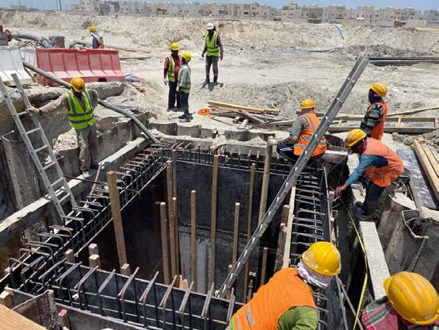
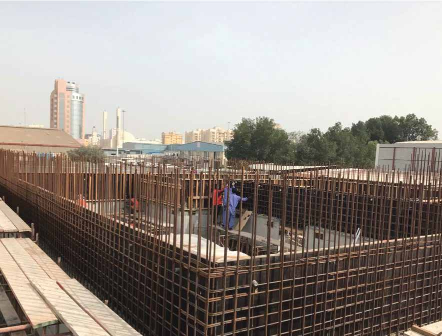

01
CORE SERVICE
Building Construction
Building construction is one of the company's core listed services, supported by project experience ranging from villas and multi-storey buildings to facilities and other structures.
 Construction experience
Construction experienceOUR SERVICES · BAHRAIN
From buildings and infrastructure to maintenance and specialist civil works, Bawadir brings practical construction experience to projects across Bahrain.
CAPABILITIES
Our service offering is based on the company's established profile and project history. The portfolio covers building, infrastructure, maintenance, waterproofing and water tank construction work.
See the work behind the capabilities →CORE SERVICE
Building construction is one of the company's core listed services, supported by project experience ranging from villas and multi-storey buildings to facilities and other structures.
Construction experienceCORE SERVICE
Maintenance and refurbishment work appears throughout the portfolio, including schools, offices, labour camps, villas and other facilities.
 Maintenance & refurbishment
Maintenance & refurbishmentCORE SERVICE
The portfolio includes road works, sewerage networks, drainage, access infrastructure, utility-related works, footpaths and other civil infrastructure activities.
 Civil infrastructure
Civil infrastructureCORE SERVICE
Waterproofing is explicitly listed among the company's services in the supplied company profile.

Specialist worksCORE SERVICE
Water tank construction is explicitly listed among the company's services, with related tank foundation and irrigation tank works appearing in the project history.

Tank & foundation worksFROM THE PORTFOLIO
Explore the wider project portfolio to see the range of building, civil, paving, maintenance and infrastructure work recorded by the company.
View project portfolio →START A CONVERSATION
Let's discuss your construction or civil works requirement.